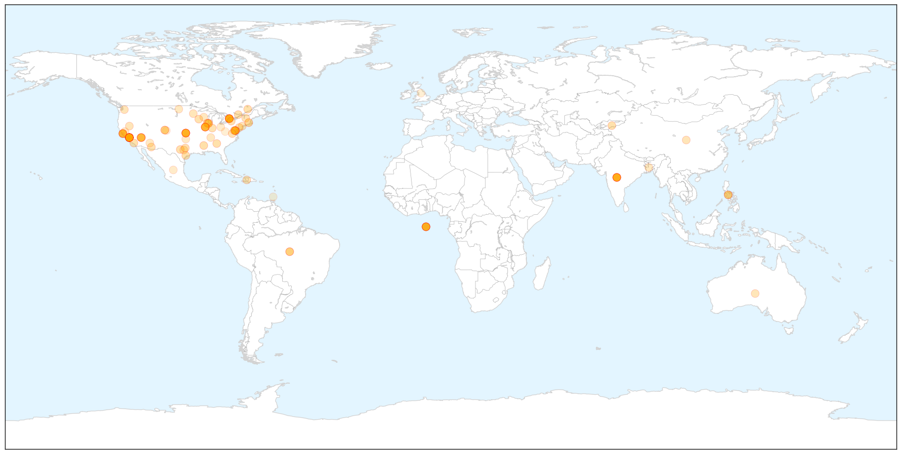

Measles
30-Day Web Trend
23 alerts, 2 warnings

30-Day Twitter Trend
3 alerts, 0 warnings

Article Locations

X

Article Confidences

Top Articles:
- 0.997
- 2 new measles cases in Las Vegas, one a Strip worker
- 0.997
- 2 new measles cases in Las Vegas, one a Strip worker
- 0.997
- Latest Measles Count: 121 Cases in 17 States and D.C.
- 0.992
- News Scan for Feb 11, 2015
- 0.991
- Measles continues to spread across the U.S.
- 0.991
- 10 Lanaudiere Cases Linked Outbreak At Disneyland Parks
- 0.991
- Montgomery County Health Department provides facts on measles
- 0.988
- The vaccine backlash is a risk to public health
- 0.987
- 10 cases of measles confirmed in Illinois
- 0.983
- Measles on the rise in U.S.
- 0.983
- Measles cases in the Americas monitored
- 0.980
- What you need to know
- 0.979
- Measles outbreak explained by UGA professors
- 0.978
- Get Your Kids Vaccinated - Ithaca Times : Opinion
- 0.978
- No measles cases reported in county
- 0.977
- Quebec measles cases linked to Disneyland outbreak
- 0.974
- Health officials identify 35 people in Atlanta measles exposure
- 0.973
- Warning on intentional exposures to measles
- 0.973
- Measles linked to Disney
- 0.972
- Georgia health officials identify 35 in measles exposure
- 0.971
- What you need to know about measles
- 0.970
- News Talk 610 CKTB :: More measles cases popping up in Canada :: News News
- 0.970
- Measles outbreak hits third Canadian province
- 0.969
- Quebec measles cases linked to Disneyland outbreak
- 0.965
- Canada measles cases linked to California Disneyland visit
- 0.965
- San Francisco Bay Area BART commuters exposed to measles
- 0.965
- GOP Chairman on Vaccines: 'Too Many Parents Are Turning Away from Sound Science'
- 0.964
- Commuter with measles prompts California transit warning
- 0.963
- How bad is measles around the world?
- 0.963
- Las Vegas restaurant worker, child diagnosed with measles
- 0.957
- Measles outbreak not a local worry
- 0.947
- Officials: 2 More Infants From Illinois Day Care Have Measles
- 0.946
- Measles threat a serious concern
- 0.944
- Is Measles' Return the 'New Normal'?
- 0.942
- School officials keeping close eye on measles outbreak
- 0.941
- trivalleycentral.com: Health And Wellness
- 0.941
- BART measles alert: LinkedIn worker rode in rush hour
- 0.938
- Measles case confirmed in York Region
- 0.937
- Commuter with measles prompts California transit warning
- 0.936
- Tests on suspected Fairfax measles come back negative
- 0.935
- Is measles back to stay?
- 0.934
- FDA Commissioner says measles outbreak 'alarming'
- 0.933
- First case of measles reported in Contra Costa; BART riders may have been exposed
- 0.933
- First case of measles reported in Contra Costa; BART riders may have been exposed
- 0.933
- FDA calls measles outbreak ‘alarming’
- 0.931
- As Measles Continues, State Health Officials Prepare
- 0.926
- Ontario Mom Jennifer Hibben-White's Note On Measles Drives The Reality Home
- 0.925
- 10 Quebecers infected with measles were not vaccinated, say health officials
- 0.925
- Germany Is Showing the U.S. the Right Way to Handle Disease Epidemics
- 0.923
- BART Riders Possibly Exposed to Measles After Infected Passenger Rides Train
Showing top 50 articles...
Top Tweets:
-
No tweets found for Feb 11, 2015
Unknown
30-Day Web Trend
0 alerts, 0 warnings

30-Day Twitter Trend
2 alerts, 0 warnings

Article Locations


Article Confidences

Top Articles:
- 0.984
- Flu may spread as successive cold fronts arrive in Taiwan
- 0.971
- Spread of plague slows in Madagascar, death toll at 71 - WHO
- 0.954
- Spread of plague slows in Madagascar, death toll at 71
- 0.929
- Chronic fatigue syndrome renamed and redefined
- 0.917
- Chicago Tribune
- 0.917
- Chicago Tribune
- 0.917
- Chicago Tribune
- 0.917
- Chicago Tribune
- 0.917
- Chicago Tribune
- 0.917
- Chicago Tribune
- 0.917
- Chicago Tribune
- 0.917
- Chicago Tribune
- 0.917
- Chicago Tribune
- 0.917
- Chicago Tribune
- 0.917
- Chicago Tribune
- 0.917
- Chicago Tribune
- 0.917
- Chicago Tribune
- 0.917
- Chicago Tribune
- 0.910
- The world windows to Thailand
- 0.905
- Tulane primate center probed after infections
- 0.896
- Boy suffers may need kidney transplant after contracting E.coli in Dorset
- 0.878
- Social stigma hinders bid to curb tuberculosis
- 0.866
- Obama says military force authorization formed from consulting Congress
- 0.866
- Magnitude 6.9 earthquake strikes Chile, close to Argentine border-USGS
- 0.866
- Ukraine's Poroshenko flies to Minsk for peace talks
- 0.866
- Chad army says kills 13 Boko Haram fighters in Nigeria
- 0.791
- More than 100 at Surrey Hills child care centre tested for TB
- 0.777
- Term ‘Chronic Fatigue’ Doesn’t Fully Explain Devastating Illness
- 0.761
- Antibiotics overuse leads to resistance
- 0.759
- Probe begins into Sylhet hospital deaths
- 0.757
- Chronic Fatigue Given New Name Along With Better Diagnosis
- 0.685
- NSW Health screening children and staff after child care worker is diagnosed with tuberculosis
- 0.670
- Probe begins after 32 deaths in Bangladesh hospital ucanews.com
- 0.626
- This Month, Dr. Darryl A. Field Encourages Improved Oral Health in Jacksonville, FL, in Honor of Gum Disease Awareness Month
- 0.619
- New Research for Battling Alzheimer's Disease
- 0.619
- Tuberculosis scare at Sydney childcare centre leads to testing of carers, kids
- 0.612
- Pittsburgh student with tuberculosis discharged from hospital
- 0.601
- Sick childcare worker triggers TB scare
- 0.599
- Northern Territory Government expands quarantine area for Cucumber Green Mottle Mosaic Virus
- 0.585
- Adviser promises action on health reforms roadmap
- 0.564
- Over 300 school students hospitalised after consuming medicines in Tripura
- 0.555
- PhilHealth, DOH and UNICEF launch pioneering primary health care package to benefit 11 million children - Philippines
- 0.551
- N. Carolina man charged with murder of Muslim students
- 0.551
- US comedian Jon Stewart to leave ‘The Daily Show’
- 0.551
- ‘Last-ditch’ Ukraine peace talks last through the night
- 0.551
- Foreign fighters flocking to Syria at ‘unprecedented rate’
- 0.551
- Russian war planes stoke Western fears amid Ukraine crisis
- 0.551
- Live: Strauss-Kahn testifies for a second day in French pimping trial
- 0.551
- France to close embassy in Yemen, urges nationals to leave
- 0.551
- French right-wing youth leader outed as illegal immigrant
Showing top 50 articles...
Top Tweets:
- 0.605
- RT: Reminder of the MERS scape. An infected human has visited or occurred in 23 countries; 89% of cases in SaudiArabia http://t…
- 0.520
- RT: Updated MERS risk assessment projects more cases & more exported cases. 971 total to date 356 at least deaths ht…
- 0.500
- RT: Filipino nurse from Saudi Arabia tests positive for MERS virus http://t.co/GDsdhtzAq7